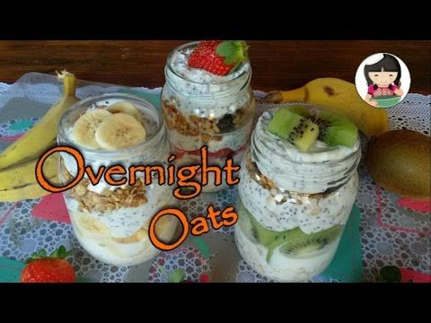

5 opções de café da manhã saudável para emagrecer - Tua Saúde
2021.06.21 21:33
Ative as notificações para não perder as publicações de saúde e bem estar mais interessantes. Clique para ativar Coronavírus Gravidez Emagrecer Gripe e Resfriado Gases Intestinais Mais Gravidez Emagrecer Gripe e Resfriado Gases Intestinais Hemorroidas Menstruação Periodo fértil Candidíase Tosse Perder barriga Saúde do bebê Alergia Massa muscular Prisão de ventre Sono Engordar Todos os Temas Testes e Calculadoras Mais Categorias Tua Saúde › Emagrecer
5 opções de café da manhã saudável para emagrecer
Tatiana Zanin Nutricionista Junho 2021 Whatsapp FacebookO café da manhã é uma refeição importante para aumentar o desempenho intelectual e garantir o bem estar durante o dia, por isso, mesmo sem fome é recomendado iniciar o dia pelo menos com uma bebida como suco, leite ou iogurte líquido e depois fazer uma refeição que garanta todos os nutrientes e a energia necessária para começar o dia.
Algumas opções de café da manhã saudável são:
Um pão francês ou de fermentação lenta com queijo minas e um copo de suco de laranja; Granola com um iogurte natural e pedaços de maçã; Café com leite, um pão de cereais com um pouco de manteiga e uma pêra; Cereais integrais com frutas misturadas e bebida de amêndoa; 2 torradas com uma vitamina de morango de bebida de soja.Para quem toma o café da manhã e faz musculação pouco tempo depois, essa refeição deve fornecer mais energia, para evitar o desgaste muscular. Por isso é importante acrescentar o mel, o presunto de frango, o ovo cozido, o mingau de aveia e a geleia de fruta, por exemplo.
Quando o treino acontece muito cedo, um bom exemplo para café da manhã é uma vitamina de leite de soja com maçã, pera e mamão, para ter energia sem ter o estômago cheio, de forma a não atrapalhar o exercício físico. Porém depois do treino é importante tomar um café da manhã completo e saudável para que ocorra uma boa recuperação e hipertrofia muscular.
Veja no vídeo a seguir uma opção saudável de pão que pode ser incluído no café da manhã e seus principais benefícios:
Além disso, alguns alimentos que devem estar presentes na mesa de café da manhã para emagrecer são:
Frutas cítricas como o abacaxi, morango ou kiwi,por exemplo: essas frutas além de possuir poucas calorias, tem muita água e fibras que são responsáveis por diminuir a fome durante a manhã e regular o intestino, diminuindo o inchaço da barriga; Leite desnatado ou bebidas de soja, aveia ou arroz: têm uma grande quantidade de cálcio com menos calorias e aumentam o valor nutricional do café da manhã sem prejudicara dieta; Granola ou pão integral com sementes que são boas fontes de carboidratos ricos em fibras, vitaminas e minerais que ajudam a emagrecer e soltar o intestino preso.Uma alternativa para variar o café da manhã e não engordar, é comer o iogurte desnatado no lugar do leite.
Receitas fit para o café da manhã
1. Panqueca de banana com aveia
Ingredientes:
1 banana 1 ovo 4 colheres de farelo de aveia 1 colher (de café) de canela ou cacau magro em póPreparo:
Amassar a banana e misturar com o ovo, a aveia e a canela, batendo tudo com um garfo. Deve-se evitar bater no liquidificador ou mixer para não ficar muito líquida. A seguir unte uma frigideira com óleo de côco e coloque em porções para dourar.
2. Falso pão
Ingredientes:
1 copo de iogurte natural a mesma medida do copo de iogurte, de farinha de trigo integral polvilhar ervas como orégano ou alecrim sal à gostoPreparo:
Misture os ingredientes numa tigela, mexendo com uma colher e depois basta fazer como uma panqueca. Unte uma frigideira média com azeite, retirando o excesso e depois coloque um pouco da massa para dourar. Vire quando estiver douradinha, para que possa cozinhar dos dois lados. Sirva com queijo branco e tomate, por exemplo.
3. Biscoito caseiro integral
Ingredientes:
1 ovo 2 colheres de aveia 1 xícara de farinha integral 1 colher de gergelim 1 colher de linhaça inteira 2 colheres de cacau magro em pó 1 colher de manteigaPreparo:
Misturar muito bem todos os ingredientes e fazer pequenas bolinhas do mesmo tamanho, amassar suavemente para assar mais rápido e levar ao forno médio durante cerca de 20 minutos.
4. Vitamina de frutas
Ingredientes
1 copo de 180 ml de iogurte integral 1 banana meio mamão 1 colher de aveiaPreparo:
Bater tudo no liquidificador e tomar logo a seguir.
5. Mix de iogurte com frutos secos
Uma outra boa ideia para o café da manhã é colocar numa tigela 1 copo de iogurte natural, 1 colher (de café) de mel, 2 colheres de granola e pedaços de fruta, como banana, pera ou laranja, por exemplo. Além de delicioso é muito saudável.
Esta informação foi útil? Sim NãoBibliografia
KERKSICK Chad et al. International society of sports nutrition position stand: nutrient timing . Journal of the International Society of Sports Nutrition. 14. 2017 Mais sobre este assunto: 5 receitas de café da manhã Low Carb Alimentos saudáveis para substituir o pão Não consigo emagrecer: 10 motivos porque isso acontece e o que fazer 3 passos para diminuir o consumo de açúcar Cardápio para emagrecer O que comer antes de dormir para não engordar 8 dicas simples para acelerar o metabolismo 7 sucos detox para emagrecer e secar a barrigaInformação do autor: Tatiana Zanin Nutricionista Formada pela Universidade Católica de Santos em 2001, com registro profissional no CRN-3 nº 15097. Vídeos relacionados 3 receitas incríveis para NÃO COMER PÃO 07:20 | 323.417 visualizações Neste vídeo a nutricionista Tatiana Zanin ensina 3 receitas super fáceis de fazer, práticas e saudáveis que ajudam a manter uma alimentação variada e a 3 DICAS PARA NÃO SENTIR FOME 04:27 | 316.984 visualizações O único PÃO que você deve comer · com @Pão da Casa 13:39 | 188.399 visualizações O PÃO MAIS SAUDÁVEL DO MUNDO 14:08 | 24.687 visualizações Inscreva-se 2.3 milhões
Se inscreva na nossa newsletter
Fechar Obrigado porRegistar! O seu email de confirmação
está a caminho
Saúde , Nutrição e Bem-estar em uma linguagem simples e acessível. Informações úteis sobre remédios, doenças, exames e tratamentos da medicina tradicional e alternativa.
Última atualização do site: 26/03/2021
Nós aderimos aos princípios da HONcode Verifique aqui.
Termos de Uso Processo Criativo Contato Privacidade Trabalhe conosco Quem Somos Missão e Valores Bibliografia RSS © 2007 - 2021 Tua Saúde – Todos os direitos reservados. Atenção: O Tua Saúde é um espaço informativo, de divulgação e educação sobre de temas relacionados com saúde, nutrição e bem-estar, não devendo ser utilizado como substituto ao diagnóstico médico ou tratamento sem antes consultar um profissional de saúde. Carregando . . .- 13 dicas para um café da manhã nutritivo - Caldo Bom
- Receitas de café da manhã: 7 opções para sair da rotina .
- 10 receitas de café da manhã saudável em até 5 minutos .
- Especial café da manhã - Panelinha
- Receita de Panqueca americana | CyberCook
- 8 sugestões para um café da manhã saudável, delicioso e .
- → 20 melhores RECEITAS PARA O CAFÉ DA MANHÃ .
- 11 receitas para o café da manhã para começar o dia bem
- 15 ideias de café da manhã para começar o dia bem
- 32 receitas que vão te ajudar a preparar um café da manhã .
- 13 dicas para um café da manhã nutritivo - Caldo Bom
- Receitas de café da manhã: 7 opções para sair da rotina .
- 10 receitas de café da manhã saudável em até 5 minutos .
- Especial café da manhã - Panelinha
- Receita de Panqueca americana | CyberCook
- 8 sugestões para um café da manhã saudável, delicioso e .
- → 20 melhores RECEITAS PARA O CAFÉ DA MANHÃ .
- 11 receitas para o café da manhã para começar o dia bem
- 15 ideias de café da manhã para começar o dia bem
10 saudável em até 5 minutos · 1. Bolo de chocolate com 3 ingredientes · 2 . - 32 receitas que vão te ajudar a preparar um café da manhã .
10 saudável em até 5 minutos · 1. Bolo de chocolate com 3 ingredientes · 2 .
